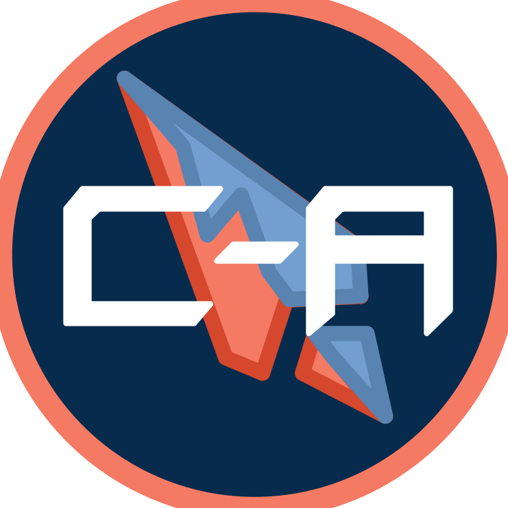

Our Mission Statement
Connect Alabama is organized and operated exclusively for charitable purposes in accordance with Section 501(c)(3) of the Internal Revenue Code. More specifically, Connect Alabama is dedicated to reducing inequality in computer literacy, technology access, and/or education among youth in Alabama, including, but not limited to, youth in rural Alabama.